DEMİRBEY FINANCE AI
KULLANIM KILAVUZU
Logo GO 3 entegre finans, çek, kredi, kart, stok ve maliyet yönetimi
Sürüm: Prototip · 18.10.2026
Hazırlayan: Claude (Anthropic) · Demirbey Kimya için
Bu kılavuz onaylanan prototip üzerinden hazırlanmıştır; ekranlardaki bazı rakamlar örnektir (bkz. Bölüm 8).
3.1 Ana Panel

Ne işe yarar: Önümüzdeki 30 günün ticari özetini tek bakışta verir: ödeme, beklenen tahsilat, net nakit, çek portföyü dağılımı, yaklaşan ödeme ve tahsilatlar.
- Kırmızı şerit: nakit açığı oluşacak ilk gün ve tutarı. KMH limitlerini girdiyseniz açığın KMH ile karşılanıp karşılanamayacağı da yazar.
- Şahsi ödemeler ayrı kutuda gösterilir, ticari nakit akışına eklenmez.
3.2 Raporlar (Haftalık · Aylık · Yıllık)
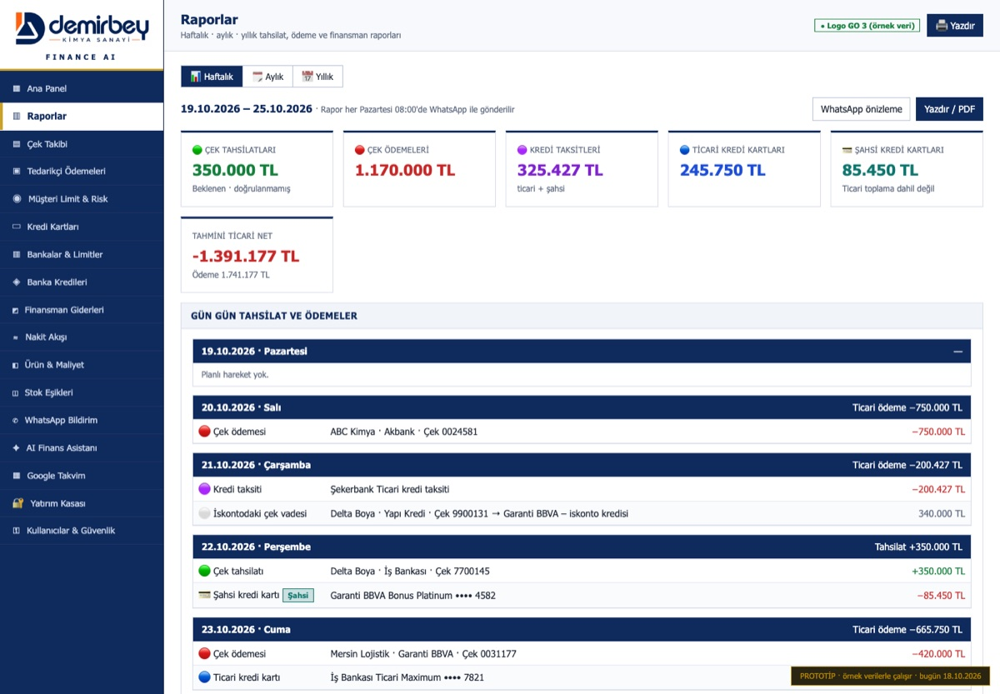
- Haftalık: pazartesi–pazar arası gün gün çek tahsilatları, çek / kredi / kart ödemeleri ve o hafta vadesi gelen iskonto / teminat çekleri. Her pazartesi 08:00'de WhatsApp ile gelir.
- Aylık: bu ay / gelecek ay seçimi; aylık toplamlar, hafta hafta dağılım, ayın en büyük 10 ödemesi, ay içinde vadesi gelen iskonto / teminat çekleri. Her ayın 1'i 08:00'de WhatsApp ile özet gelir.
- Yıllık: 12 ayın tahsilat, ödeme ve ticari net tablosu; yanında aylık finansman giderleri ve alacak zararları, en altta yıl toplamları.
- Her sekme "Yazdır" ile kurumsal başlıklı çıktı olarak alınabilir.
3.3 Nakit Akışı
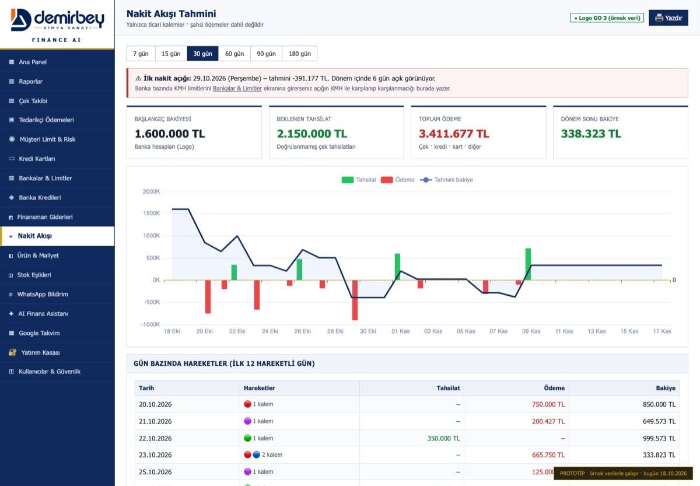
Ne işe yarar: 7, 15, 30, 60, 90 ve 180 günlük nakit tahmini. Günlük bakiye çizgisi ve açık oluşan günler. Yalnızca ticari kalemler hesaba girer; beklenen (doğrulanmamış) tahsilatlar ayrı tutulur.
4.1 Çek Takibi
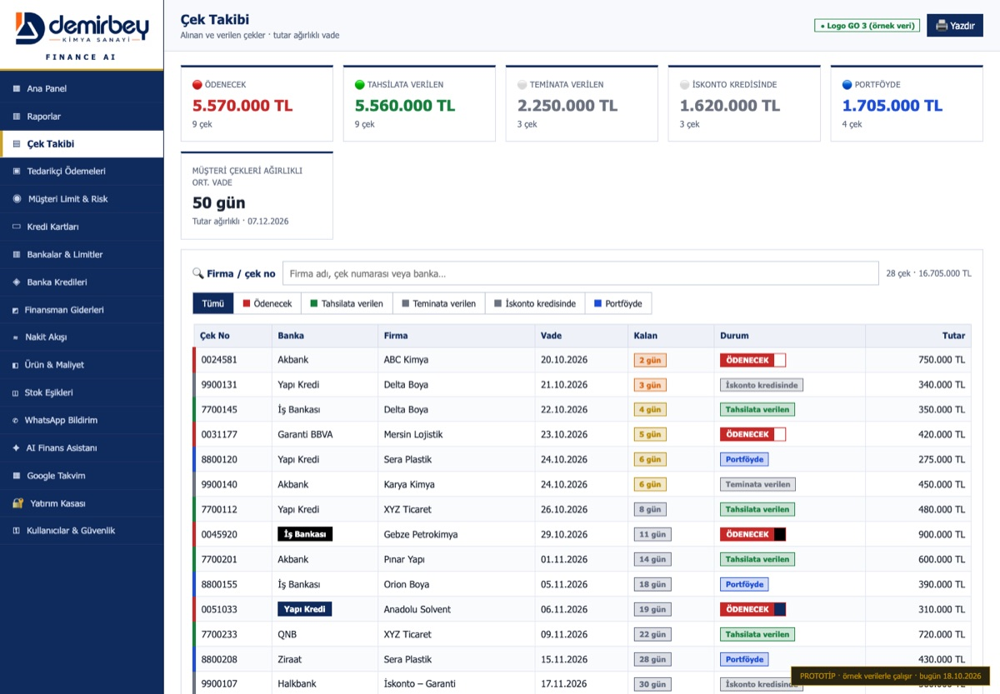
Ne işe yarar: Alınan ve verilen bütün çekler; kategori, vade, kalan gün ve müşteri çeklerinin tutar ağırlıklı ortalama vadesi.
- Üstteki Firma / çek no kutusuyla arayın; renkli düğmelerle kategori süzün.
- Her çek yalnızca bir kategoride sayılır; teminat, iskonto ve portföy çekleri nakit gibi hesaplanmaz.
4.2 Müşteri Limit & Risk
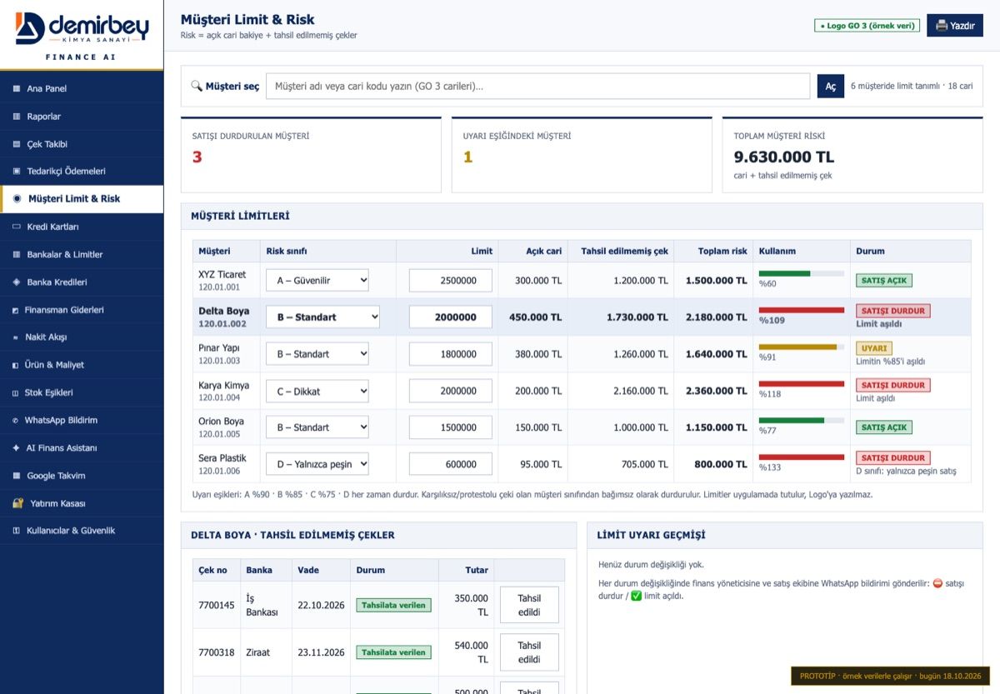
Ne işe yarar: Her müşteri için limit ve risk sınıfı (A/B/C/D). Risk = açık cari bakiye + tahsil edilmemiş çekler.
- 🔍 Müşteri seç: ad veya cari koduyla arayın. Limiti olmayan bir cariye buradan limit tanımlanır.
- Limit aşılınca veya konkordato/iflas/karşılıksız kaydı varsa SATIŞI DURDUR. Çek tahsil edilip risk düşünce "limit açıldı" bildirimi gelir.
- Alt bölümde müşterinin fatura bazında vade aşımı, vade farkı hesabı, "Vadesi nasıl geçti?" açıklaması ve proforma fatura var.
4.3 Tedarikçi Ödemeleri
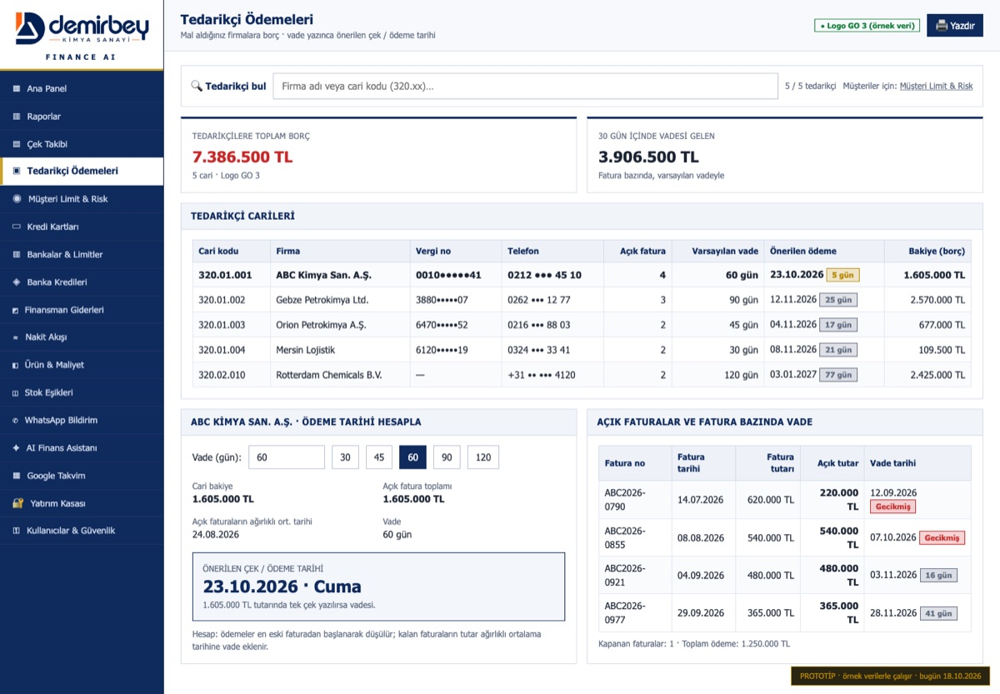
Ne işe yarar: Mal aldığınız firmalara olan borç. Vade günü yazdığınızda (ör. 60 gün), ödemeler en eski faturadan düşülür, kalan faturaların ağırlıklı ortalama tarihine vade eklenir ve önerilen çek / ödeme tarihi çıkar. Müşteriler bu ekranda değil, Müşteri Limit & Risk'tedir.
5.1 Bankalar & Limitler
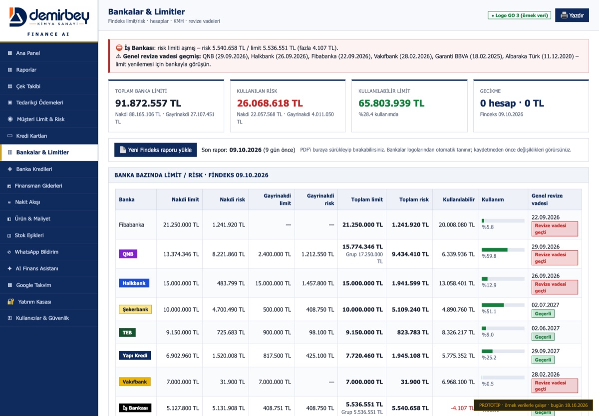
Ne işe yarar: Bankaların size tanıdığı limit ve kullandığınız risk (Findeks), genel revize vadeleri, ticari hesaplar, IBAN'lar ve KMH.
- Yeni Findeks raporu yükle: PDF'i seçin veya sürükleyin. Bankalar logolarından tanınır; kaydetmeden önce farklar gösterilir. Eski raporlar "Rapor geçmişi"nde kalır.
- KMH düzenle: her banka için KMH limiti, kullanılan KMH ve aylık faiz oranı. Boş KMH, nakit açığı uyarısında kullanılır.
- Uyarılar: limit aşımı (ör. İş Bankası), revize vadesi geçmiş / yaklaşan bankalar.
5.2 Banka Kredileri
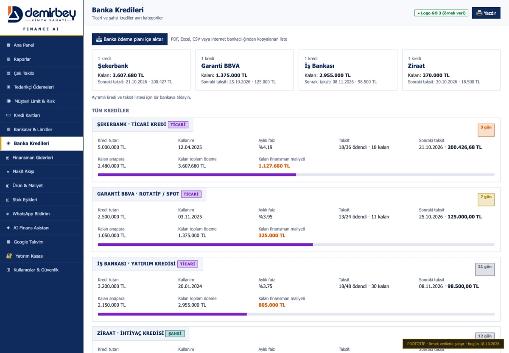
Ne işe yarar: Krediler ve taksit planları. Bir bankaya tıklayınca o bankanın kredileri, bir krediye tıklayınca ödenmiş / ödenecek taksit listesi açılır. "Ödendi işaretle" kullanıcı beyanıdır; banka kaydıyla doğrulanır.
- 📥 Banka ödeme planı içe aktar: PDF, Excel veya internet bankacılığından kopyalanan liste. Sütunlar otomatik tanınır; "taksit = anapara + faiz + vergiler" tutmayan satırlar işaretlenir; yanlış sütunu açılır listeden düzeltirsiniz.
6.1 Ürün & Maliyet
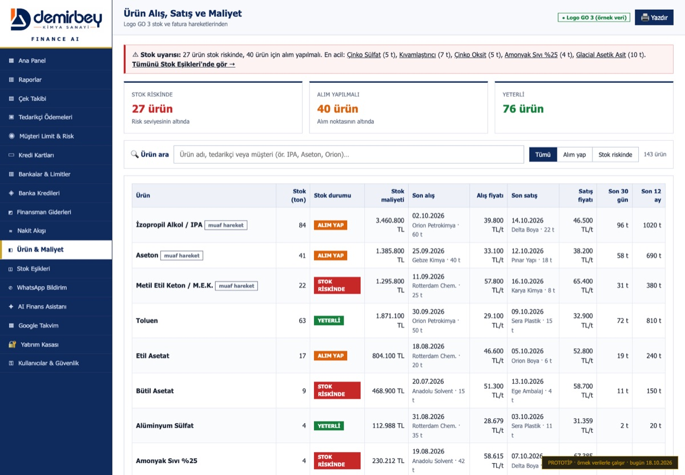
- 🔍 Ürün ara, "Alım yap" / "Stok riskinde" filtreleri.
- Ürüne tıklayınca: Logo giriş/çıkış dökümü, mevcut stok ve durumu, alım noktası / risk seviyesi ayarları, son alış/satış, ağırlıklı ortalama fiyatlar, brüt kâr ve marj (yalnızca gerçek kayıtlardan; varsayıma dayalı tahmini hesaplar gösterilmez).
- Muaf firmalar: Çalışkanlar Kimyevi Maddeler ile yapılan alış ve satışlar maliyete, stoğa ve satış hızına girmez. Liste sayfanın altında yönetilir.
6.2 Stok Eşikleri
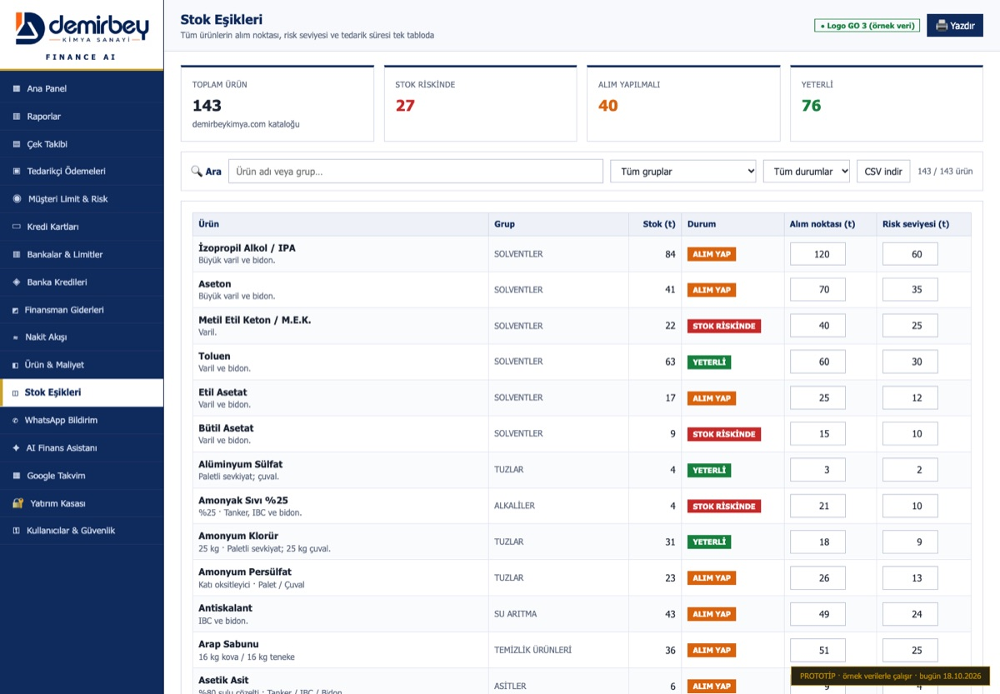
Ne işe yarar: 143 ürünün tamamının alım noktası ve risk seviyesini tek tabloda topluca girmek. Grup ve durum filtresi, CSV indirme. Satış hızına dayalı tahminler gösterilmez; yalnızca stok miktarı ve alım/risk durumu.
7.1 WhatsApp Bildirimleri
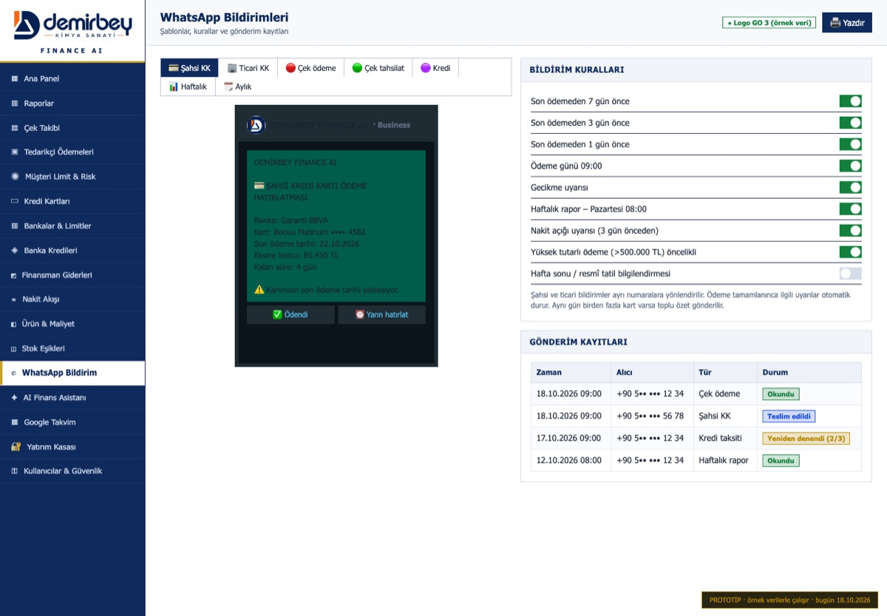
Ödeme hatırlatmaları (7 / 3 / 1 gün önce ve ödeme günü), haftalık rapor, nakit açığı, limit, stok ve kart ekstresi uyarıları. Mesajdaki ✅ Ödendi / ⏰ Yarın hatırlat düğmeleri. Tam kart numarası WhatsApp'a asla yazılmaz.
7.2 Google Takvim
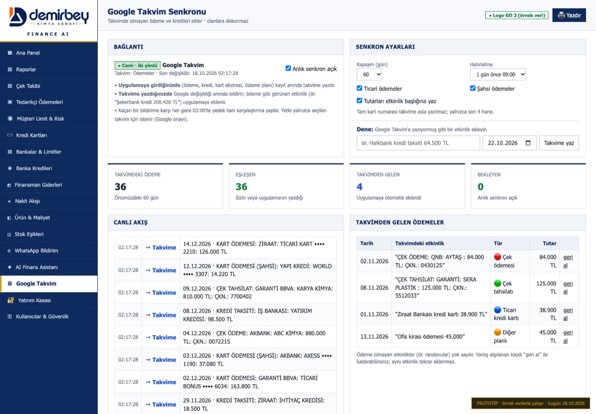
Yazım biçimi: takvime ödeme ve tahsilatlarınızı şu biçimde yazabilirsiniz; uygulama da takvime aynı biçimde yazar:
ÇEK ÖDEME: QNB: AYTAŞ : 84.000 TL: ÇKN.: 0430125 · ÇEK TAHSİLAT: YKB: DELTA BOYA: 350.000 TL: ÇKN.: 7700145 · KREDİ TAKSİTİ: ŞEKERBANK: TİCARİ KREDİ: 200.427 TL
Sıra esnektir; tür, banka (kısaltmalar da: YKB, İŞ, HALK…), firma, tutar ve çek numarası ayrı ayrı okunur. Çek numarası varsa eşleştirme önce ona göre yapılır.
Anlık ve iki yönlü: uygulamaya girilen ödeme hemen takvime yazılır; takvime yazdığınız ödeme (ör. "Halkbank kredi taksiti 64.500 TL") anında uygulamaya gelir. Takvimde zaten olan ödemeye dokunulmaz; randevu gibi ödeme olmayan etkinlikler yok sayılır; yanlış algılanan "geri al" ile kaldırılır. Gece yedek kontrol yapılır.
7.3 AI Finans Asistanı
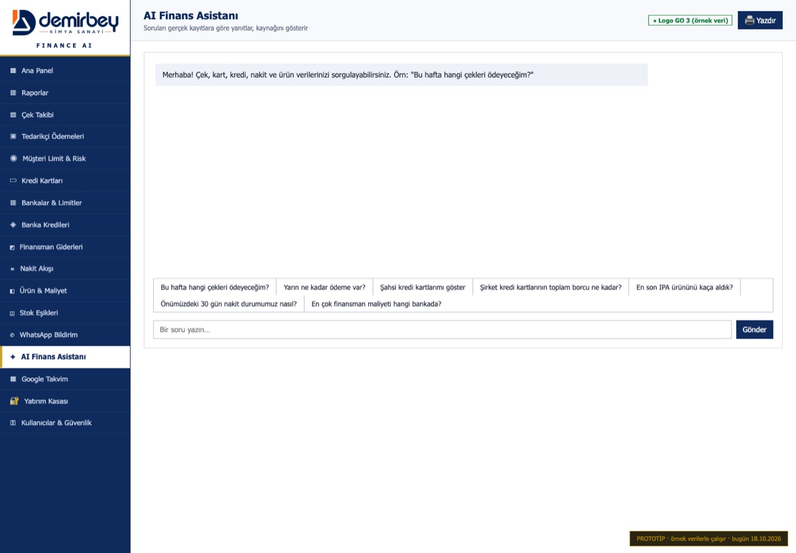
"Bu hafta hangi çekleri ödeyeceğim?", "En son IPA'yı kaça aldık?", "Önümüzdeki 30 gün nakit durumumuz nasıl?" gibi soruları kayıtlara göre yanıtlar ve kaynağını gösterir. Yetkiniz olmayan bilgiyi vermez.
7.4 Yatırım Kasası (özel şifreli)
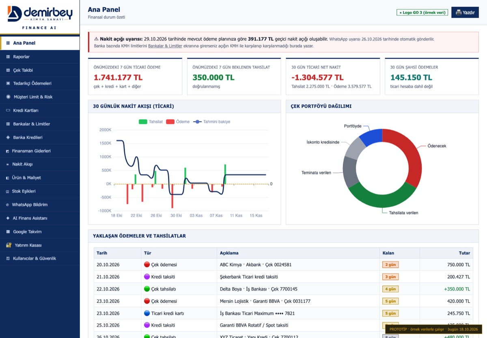
- Uygulama girişinden ayrı, size özel şifreyle açılır; 5 dakika işlem yapılmazsa veya başka ekrana geçilirse kilitlenir.
- Altın, gümüş, döviz, fon, borsa, TL; kimin (Ercan / Aynil), nerede (fiziki kasa, banka, aracı kurum), tarihli ekleme/çıkış, maliyet, güncel piyasa değeri, kâr/zarar.
- Ercan'ın varlıkları ve Aynil'in varlıkları ayrı tablolarda, her birinin toplamıyla; en altta türe göre genel toplam (Ercan + Aynil), toplam maliyet, kâr/zarar ve kişi payı.
- Şifremi unuttum: WhatsApp doğrulama kodu + şifre belirlerken verilen kurtarma kodu. Kurtarma kodunu güvenli bir yerde saklayın.
7.5 Kullanıcılar & Güvenlik
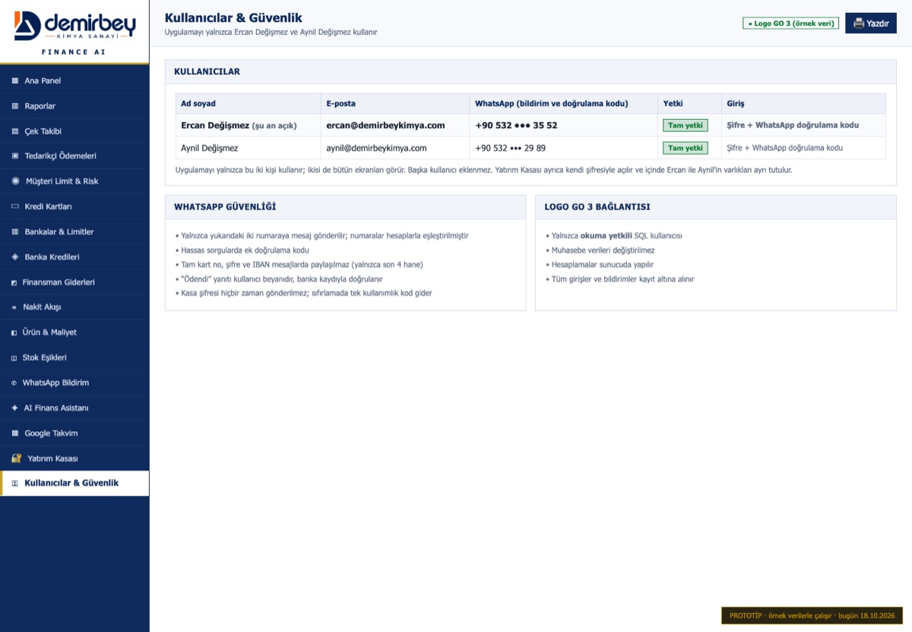
| Kullanıcı | E-posta | Yetki |
|---|
| Ercan Değişmez | ercan@demirbeykimya.com | Tam yetki |
| Aynil Değişmez | aynil@demirbeykimya.com | Tam yetki |
Uygulamayı yalnızca bu iki kişi kullanır; başka kullanıcı eklenmez. Giriş şifre ve WhatsApp doğrulama koduyla yapılır. Yatırım Kasası ayrıca kendi şifresiyle açılır.
8. Benzer işler yapan ekranlar ve sadeleştirme önerisi
Bazı ekranlar aynı veriyi farklı açıdan gösteriyor. Aşağıdaki tablo hangisini ne zaman kullanacağınızı ve birleştirilebilecekleri gösterir.
| Benzer görünen ekranlar | Farkı | Öneri |
|---|
| Ana Panel · Raporlar · Nakit Akışı | Panel: 30 günün özeti. Raporlar: haftalık / aylık / yıllık listeler. Nakit akışı: 7–180 gün bakiye tahmini. | Tek "Özet" menüsünde 3 sekme. Nakit Akışı, Panel'in içine "detay" sekmesi olarak alınabilir. |
| Çek Takibi · Raporlar (iskonto/teminat çekleri) | Çek Takibi tüm çekler; Raporlar yalnızca o hafta / ayınkiler. | Ayrı kalmalı; Raporlar'daki iskonto/teminat tablosu Çek Takibi'ne bağlantı olabilir. |
| Bankalar & Limitler · Banka Kredileri · Finansman Giderleri | Limitler: ne kadar kullanabilirim. Krediler: ne zaman ne ödeyeceğim. Finansman giderleri: bunun bana maliyeti ne. | Birleştirme önerisi: tek "Bankalar" menüsü, içinde Limitler / KMH / Krediler / Finansman giderleri sekmeleri. |
| Ürün & Maliyet · Stok Eşikleri | Aynı stok verisi. Ürün: tek ürünün derin analizi. Eşikler: 143 ürünün toplu ayarı. | Birleştirme önerisi: Stok Eşikleri, Ürün & Maliyet içinde "Toplu eşik ayarı" sekmesi olsun. |
| Müşteri Limit & Risk · Tedarikçi Ödemeleri | Müşteri: alacak tarafı (bize borçlu). Tedarikçi: borç tarafı (bizim borcumuz). | Ayrı kalmalı; menüde "Cariler" başlığı altında yan yana durabilir. |
| WhatsApp Bildirim · Google Takvim | İkisi de bildirim kanalı; veri üretmez. | Birleştirme önerisi: tek "Bildirimler" menüsü (WhatsApp ve Takvim sekmeleri). |
| Kredi Kartları · Banka Kredileri | Kart: aylık ekstre. Kredi: taksit planı. | Ayrı kalmalı (şahsi/ticari ayrımı kartlarda önemli). |
Önerilen sade menü (17 ekran → 10 başlık)
| Menü | İçindekiler |
|---|
| Özet | Ana Panel · Raporlar (haftalık · aylık · yıllık) · Nakit Akışı |
| Çekler | Çek Takibi |
| Cariler | Müşteri Limit & Risk (vade analizi, proforma) · Tedarikçi Ödemeleri |
| Bankalar | Limitler & Findeks · Hesaplar & KMH · Krediler · Finansman giderleri & alacak zararları |
| Kredi Kartları | Şahsi · Ticari · Birleşik takvim |
| Ürün & Stok | Ürün analizi · Toplu eşik ayarı · Muaf firmalar |
| Bildirimler | WhatsApp · Google Takvim |
| AI Asistan | — |
| Yatırım Kasası | (özel şifre) |
| Ayarlar | Kullanıcılar & güvenlik · Firma bilgileri · Muaf firmalar · Logo bağlantısı |
Bu birleştirmeyi onaylarsanız menü bu yapıya göre düzenlenir; ekranların işlevi değişmez, sadece yerleri ve gruplanmaları değişir.
9. Prototipteki gerçek ve örnek veriler
| Gerçek (sizin verdiğiniz veya resmi kaynak) | Örnek (canlıda Logo GO 3'ten veya sizin girişinizden gelecek) |
|---|
- Firma bilgileri (unvan, adres, vergi no)
- 6 ticari banka hesabı ve IBAN'ları
- Findeks 09.10.2026 banka limit / risk tablosu
- www.demirbeykimya.com ürün kataloğu (141 ürün)
- Logo ve marka renkleri
- TCMB 16.10.2026 döviz kurları
|
- Çekler, cari bakiyeler, faturalar, müşteri/tedarikçi adları
- Stok miktarları, satış ve alış fiyatları
- Hesap bakiyeleri, KMH limitleri
- Kredi kartları, krediler, taksitler
- Finansman giderleri ve alacak zararları kayıtları
- Yatırım kasası varlıkları, altın fiyatları
|
Kurulum gereksinimleri
| Bağlantı | Gerekenler |
|---|
| WhatsApp Business API | Meta Business hesabı, şirkete ait WhatsApp numarası, onaylı mesaj şablonları (ödeme hatırlatma, haftalık rapor, doğrulama kodu). Kasa şifresi sıfırlanırken şifre değil, kayıtlı numaraya tek kullanımlık doğrulama kodu gönderilir. |
| Google Takvim (OAuth) | Google Cloud projesi, Takvim API'sinin açılması, OAuth onay ekranı; yalnızca seçilen takvim için izin. Anlık bildirim için sunucunun internetten erişilebilir HTTPS adresi. |
| Logo GO 3 | Salt okunur SQL kullanıcısı (Dokumanlar/SQL), sunucunun Logo veritabanına ağ erişimi. |
| Altın fiyatları | Harem Altın'dan izin / API anlaşması veya lisanslı bir piyasa verisi sağlayıcısı. |
Canlıya geçiş adımları
- Logo GO 3 sunucusunda salt okunur SQL kullanıcısının açılması ve keşif betiğinin çalıştırılması (Dokumanlar/SQL).
- Sunucunun (ASP.NET Core) şirket ağında kurulması; Windows, Mac ve iPad uygulamalarının ona bağlanması.
- WhatsApp Business ve Google Takvim bağlantılarının onaylanması.
- Kart, KMH, limit ve eşiklerin ilk girişi; ilk Findeks raporunun yüklenmesi.
Güvenlik: Kart numaraları ve yatırım kasası verileri şifreli saklanır. CVV ve kart şifresi hiçbir zaman istenmez. WhatsApp, rapor ve loglarda yalnızca kartın son 4 hanesi yer alır.